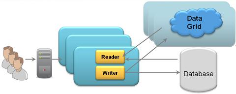
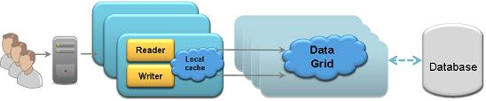
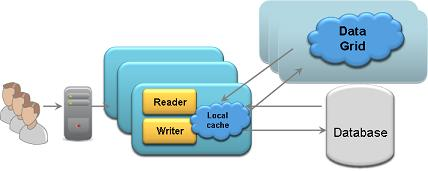
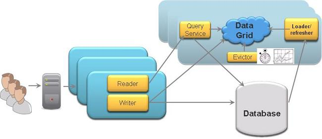

Section Summary: GigaSpaces IMDG supports three different caching mechanisms: in-line cache, side cache and client cache.
Overview
GigaSpaces IMDG supports three kinds of caching mechanisms. Using GigaSpaces IMDG as a cache provides you the following benefits:
- Low latency - In-Memory Data access time without any disk usage.
- Data access layer elasticity - Scale out/up on demand to leverage additional machine resources.
- Less load on the database layer - Since the cache will isolate the database from the application somewhat, you will have less contention generated at the database layer.
- Continuous High-Availability - Zero downtime of your data access layer with the ability to survive system failures without any data loss.
The main supported caching mechanisms are the in-line cache and the side cache.
Both the In-line cache and the Side cache support the common deployment toplogies: replicated, partitioned and primary-backup partitioned.
In-line Cache
With this mechanism, the IMDG is the system of record. The database data is loaded into the IMDG when it is started. The IMDG is responsible for loading the data and pushing updates back into the database. The database can be updated in synchronously or asynchronously.
- When running in all-in-cache cache policy mode, all data is loaded from the database into the cache once it is started.
- When running in LRU cache policy mode, a subset of the data is loaded from the database into the cache when it is started. Data is evicted from the cache based on available memory or a maximum amount of cache objects. Once there is a cache miss, the cache looks for the data within the underlying data-source. If matching data is found, it is loaded into the cache and delivered to the application.

The in-line cache is implemented using the following configurations:
- Read-through and Write-through - For persisting the cache data synchronously.
- Write-behind - Mirror - For persisting the cache data asynchronously.
Persistence logic can either be the out-of-the-box Hibernate external data source or any custom persistence logic that implements the external data source interfaces.
The in-line cache ensures maximum performance when fetching data where the database is outside the critical path of the application transaction. (This makes more sense than it might seem: database contention is a primary source of application performance failure.)
| For best performance you should use the ALL-IN-CACHE cache policy with the write-behind mirror. This will ensure maximum hit rate when accessing the cache. With this mode, you should make sure the cache can accommodate all the data you will access. |
The in-line cache mechanism is widely used with the following GigaSpaces APIs:
- GigaSpace API - GigaSpaces native Object/SQL API.
- Map API - GigaSpaces Key/Value (JCache/Hashtable) API.
When you should use an in-line cache?
An in-line cache is very useful when:
- The total size of data stored within the database (or any other external data source) is equal or less than the amount of data stored in memory. Ideally, you'd use the ALL_IN_CACHE cache policy mode.
- The original data model of the data within the database (or any other external data source) is similar to the data model of the objects in memory. The External Data Source will work very well: the data will be loaded automatically from the database into the cache and every change to the data in the cache will be propagated to the database behind the scenes.
Side Cache
With this mechanism, the application is responsible for maintaining the data in the cache. Here is the flow, identical to other cache products:
1. The application attempts to read an object from the cache.
2. If the object is found within the cache, the application uses it.
3. If the object isn't found within the cache:
- The application fetches it from the database.
- The application writes it into the cache.
4. The next time the application attempts to fetch the same object, it will be read from the cache - unless the object has been expired or evicted.

The Side cache scenario is widely used with the following GigaSpaces APIs:
- GigaSpace API - GigaSpaces native Object/SQL API.
- Map API - GigaSpaces Key/Value (JCache/Hashtable) API.
- JDBC API - GigaSpaces native JDBC driver.
- memcached API - Using any memcached client (Java , C# , C , C++..). See memcached libraries page for the different programming languages supporting the memcached protocol that may be used with GigaSpaces server memcached implementation.
- Hibernate - Leveraging GigaSpaces as Hibernate 2nd Level Cache.
When you should use a side cache?
A side cache is very useful when:
- The total amount of data stored in the database (or any other external data source) is relatively much higher than the amount of data stored in-memory. In such a case, you should be running in LRU cache policy mode.
- The original data model of the data within the database (or any other external data source) is very different than the data model of the objects in-memory. In such a case the built-in External Data Source may not work well, but customized mapping logic should be implemented at the client application side to load data from the database and push it into the cache.
Client Cache
Together with the in-line cache and side cache scenarios, you can also use client cache. This client cache may host data loaded from any IMDG partition. The client cache data access does not involve any serialization or network calls.
When using client cache, you use a two-layered cache architecture: The first layer runs locally, within the client, and the second layer runs in the remote IMDG. The remote IMDG may use any of the supported deployment topologies.
In-line cache with a client cache:

Side cache with a client cache:

The client cache size is limited to the client process heap size. The client-side cache is updated automaticaly once the master copy of the object within the IMDG is updated. The client cache can be implemented using the following configurations:
- Local Cache - On-demand client cache loading data based on client activity. This type of client cache evicts data once the client available memory drops below a configurable value. The local cache is designed for data retrival based on ID (readByID).
- Local View - Pre-fetch client cache loading data based on set SQL queries. This client cache does not evict data. This client cache is designed to be read-only and support both queries and reads based on ID.
| Client cache is not enabled by default. |
When you should use a Client Cache?
Client side cache should be used when most of the application activities (above 80%) involves reading data (a read-mostly scenario). When having repeated read activities for the same data (using readById operation), client cache will provide excellent performance boost (up to 100 times faster when compared to when a client cache is not being used). You should not use client cache when having a relatively large amount of data updates or removal operations since the overhead of the client cache updates will impact the overall application performance.
Cache Refresh Options
When running the cache in LRU cache policy mode, you may need to expire or evict the cache data. This will make sure you will not load the cache with unnecessary data. Another reason to expire or evict the cache data is to make sure the memory allocated for the cache (JVM heap size) can accommodate the most valuable objects your applications needs.

Here are the options you may use to refresh the cache:
- Eviction - You may configure the space to evict data by running in LRU eviction policy.
- Lease expiration - You may write objects into the space with a specific time to live (lease duration).
- Programmatic expiration - You may expire the object using:
- net.jini.core.lease.Lease.cancel() - You can get the Lease object as a result of a write operation for a new object.
- GigaSpace.write operation for an existing object (update) using a short lease time. See the GigaSpace interface write operation for details.
- Take operation with TakeModifiers.EVICT_ONLY mode. See the GigaSpace interface take operation for details.
- Periodic refresh - You may push data into the cache in a periodic manner via a timer. The Timer will be fetching relevant data that was recently updated within the database and pushing it into the cache.